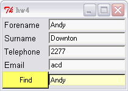

Computer Programming
Tcl/Tk - A contace manager
This exercise walks you through a layout problem with a more substantial code example behind it. The aim is to build the GUI for a simple contact manager, based on data supplied in a table stored as a file (the data file is available via a link in the online version of this lab script):

Content
Requirements
- Re-start SpecTcl or select File=>New to create an empty grid.
- Create labels on the two grid cells of the left column of the GUI canvas. It is best to do this by clicking on the label icon in the palette, then simply clicking in the relevant cells: this causes both of them to be registered as label widgets. (You can de-select the label widget by clicking its icon in the palette again.)
- To create the third and fourth labels (Telephone and Email in the figure above), click roughly where the middle of each label should appear in the GUI.
- Change the text of the labels to match the above figure. When each label widget is selected, its text can be edited in the entry region at the left of the button bar. (You have to click in the entry region before typing.)
- You will see that the text on the labels is left-aligned, but by default labels are centred. To change this, use SpecTcl's 'sticky' button (the left-hand button in the row to the right of the text entry region).
- Create the Find button by selecting the button widget and clicking roughly where it should appear below the Email label. Set the text and the command name of the button to Find.
- You now need to create the entry widgets. Drag one from the palette to the cell to the right of the Forename cell. Create the other four entry widgets in the same way. Make sure that text within the entry widgets is right-aligned, and associate an appropriate variable name with each entry.
- You now need to add a finishing touch and make the application re-size in a sensible way.
- Place a border around the top, right and bottom sides of the GUI by selecting (by clicking) on each edge and using Edit=>Insert to create a new row or column.
- To set the minimum size for each border, grab the right gridline of the last column and watch the message area at the bottom of the window. Move this edge of the border left until it is 10 pixels wide.
- Repeat with the other edges, noting that you must move the right-hand edge of columns and the bottom edge of rows.
- For column 2, click repeatedly on the column "handle" until it has arrowheads at its ends. Column 1 should not have arrowheads. This sets the re-size behaviour for each column.
- Test out your GUI and observe what happens when you re-size it.
- You now need to add code to implement the functionality of the contact manager using the Edit=>Edit code facility in SpecTcl. The following is a template of the code you will need:
1. proc <procedurename> {} {
2. global <declarations>
3.
4. open <stafflist file, catching any errors>
5. while <read line from stafflist file> {
6. if [regexp <searchstring>] ;# match search string
7. regexp <set fields to entry variables>
8. set <match found>
9. }
10. }
11. if <no matches found> {
12. set <entry variables> "No match found"
13. }
14. close <stafflist file>
15. }
The bold text is actual Tcl commands which you should use to implement file handling, string matching etc.; the parts in angle brackets need to be expanded to match variable names etc which you have chosen.
- Test and verify that your application works correctly, and can search on any field within the database. Make sure it also works correctly if no match for the search string is found.
- Paste a screenshot of your interface and the code file which it generates into your assignment documentation. What happens if the search string matches more than one entry in the datafile? Explain how you would modify the design of the contact manager to handle this case sensibly. (It is not necessary to implement working code.)
Programming
#!/usr/bin/wish -f
# A Simple calculator (advanced)
# % Author % Ching-Wen.Lai
# % Version % 0.1
# % Requirement % 1. TclPro(直譯器 ; from : http://www.activeperl.com/Products/TclPro/ )
# 2. Windows XP(平台)
# 3. Visual Tcl(Editor; 可將 .tcl 轉成 .exe 檔 ;可有可無)
# % Execution % after you installed tclPro , double click the .tcl file
# % Function % 1. 基本作業上所說的功能
# 2. 除 0 錯誤可偵測出
# 3. 基本 錯誤 可轉向 至 對話盒 顯示
#
# % Undone. % 1. 科學符號 E 的功能 還未寫 需看是否可經 函式 直接轉換
# 2. Entry 輸入字串長度控制
#
# % Disadvantages % Entry 不太會用 有些地方寫的 不是 很好
#
# % Reference % 1. 洪朝貴的首頁 http://www.cyut.edu.tw/~ckhung/
# 2. tclPro 內部 demo / Demos-IWidgets( 非常有用 )
# 3. Beginning Linux Programming 基峰 isbn 957-566-692-5
set answer ""
set temp ""
# ............... Drawing GUI ...........................
# my mistakes: there is more than one space between -text and "
option add *off.width 10
option add *ent.width 45
button .off -text "OFF" -background "#FFFF99" -borderwidth "3" -command {exit}
entry .ent -justify "right" -textvariable answer
foreach i {1 2 3 4 5 6 7 8 9 0 } {
button .f$i -text "$i" -command [list AddChar $i]
if { $i == "0" } {
grid .f$i -row 4 -column 0 -sticky "ew"
} else {
grid .f$i -row [expr {(($i%3) != 0 ) ? (($i/3)+1) : ($i/3)}] \
-column [expr {(($i%3) == 0 ) ? (($i%3)+2) : ($i%3)-1}] -sticky "ew"
}
}
button .fdot -text "." -command [list AddChar .]
button .fe -text "E" -command [list AddChar E]
button .frightBrackets -text "(" -command [list AddChar (]
button .fleftBrackets -text ")" -command [list AddChar )]
button .fclr -text "C" -background "#CCFF66" -borderwidth "3" -command Clear
button .fequ -text "=" -background "#33CCFF" -borderwidth "3" -command Evaluate
button .fadd -text "+" -command [list AddChar +]
button .fsub -text "-" -command [list AddChar -]
button .fmul -text "*" -command [list AddChar *]
button .fdiv -text "/" -command [list AddChar /]
# ............ Geometry Management (else 0-9 ) ..................
grid .off -row 0 -column 0 -sticky "ew"
grid .ent -row 0 -column 1 -columnspan 4 -sticky "ew"
grid .fdot -row 4 -column 1 -sticky "ew"
grid .fe -row 4 -column 2 -sticky "ew"
grid .frightBrackets -row 1 -column 3 -sticky "ew"
grid .fleftBrackets -row 2 -column 3 -sticky "ew"
grid .fclr -row 3 -column 3 -sticky "ew"
grid .fequ -row 4 -column 3 -sticky "ew"
grid .fadd -row 1 -column 4 -sticky "ew"
grid .fsub -row 2 -column 4 -sticky "ew"
grid .fmul -row 3 -column 4 -sticky "ew"
grid .fdiv -row 4 -column 4 -sticky "ew"
#......................................................................
# response
# my mistakes : prog xxx { yyy } { be care yyy was capsuled by { }
# .....................................................................
# after < 0-9 + - * / ( ) > buttoms is pressed , display them on display area
proc AddChar { i } {
.ent insert [.ent index end] $i
}
# ..... Clear display area .....
proc Clear { } {
.ent delete 0 end
}
# ..... Display the result .....
proc Evaluate { } {
global answer
global temp
set temp $answer
if [ catch { set temp [expr $temp]} res ] {
set i [tk_dialog .info "Info" $res info O Ok ]
set temp ""
}
.ent delete 0 end
.ent insert 0 $temp
}